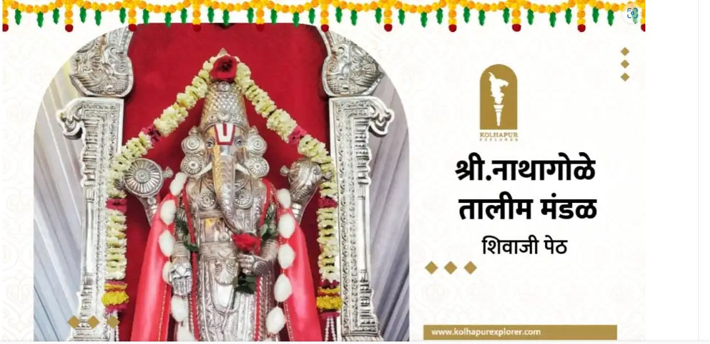

नाथागोळे तालीम मंडळ
स्थापना - 1905
अध्यक्ष - श्री वस्ताद वरूटे
छत्रपती शिवाजी पेठेतील ही एक जुनी व पुरोगामी विचारांची तालीम म्हणून ओळखली जाते. छ शिवाजी पेठेच्या व मंगळवार पेठेच्या मध्यभागी असणारी ही तालीम. कोल्हापूर शहरामध्ये तालमीच्या आजच्या स्थितीला अशा चन्या Join ठराविकच तालीम आहेत त्यामध्ये जी गला 117 वर्ष आहे त्या स्थितीमध्ये अभिमानाने उभी आहे, म्हणजे जुने दोन मजली दगडी बांधकाम, तालमीच्या आत मध्यभागी लाल मातीचा आखाडा (सद्यस्थितीत झाकलेला), जुन्या लाकडी चौकटी दरवाजे असा एक मौल्यवान ऐतिहासिक ठेवा तालमीच्या सर्व कार्यकर्त्यांनी जतन करून ठेवला आहे. 1959 साली कोल्हापुरातील पहिली सार्वजनिक भिशी चालू करणारी नाथागोळे तालीम ही पहिली संस्था आहे. गेली 117 वर्षाचा इतिहास पाहता ताल Jain नेक प्रसिद्ध कुस्तीगीर वस्ताद वरुटे, वस्ताद माने , वस्ताद लाड, पै उस्ताद या दिग्गजांच्या हाताखाली
अनेक नामवंत मल्ल कोल्हापूरला दिले आहेत .तसेच फुटबॉल ची पंढरी ओळख असणाऱ्या कोल्हापूर मध्ये प्रल्हाद चव्हाण, अरुण चव्हाण यांसारखे अनेक फुटबॉल खेळाडू या तालमीने घडविले आहेत. त्याचबरोबर मर्दानी खेळाची परंपरा तालमीला लाभली आहे. खेळा सोबतच साहित्य क्षेत्रातही तालमीने लेखक खांडेकर, पत्रकार सोपान पाटील, शाहीर आझाद नाईकवडी Join
साहित्यिक तालीम क्षेत्रात घडले आहेत.
नाथा गोळे तालीम मंडळ दरवर्षी गणेशोत्सव मोठ्या
थाटात साजरा करणारे मंडळ आहे. महाराष्ट्रातील एकमेवच अशी 57 किलो चांदीची बालाजी रूपातील श्री गणेश मूर्ती 1995 साली तालमीचे तत्कालीन अध्यक्ष श्री प्रल्हाद भाऊसो चव्हाण हे
कोल्हापूर महानगरपालिका महापौर पदी विराजमान
Join झाले वर सर्व कार्यकर्त्यांनी स्वखर्चातून 37 किलो
चांदीची कायमस्वरूपी मूर्तीची स्थापना केली आहे.
दरवर्षी गणेशोत्सवाचा देखावा अवाढव्य स्वरूपात
न्यू महाद्वार रोड, लाड चौक या ठिकाणी उभा केला
जातो. श्रींच्या चांदीच्या मूर्ती सोबत दरवर्षी एका
उत्सव मूर्ती ची स्थापना केली जाते. डॉल्बीला फाटा
देत पारंपारिक वाद्यां सह पालखीतून मिरवणुकीची
परंपरा आजही सर्व कार्यकर्त्यांनी जोपासली आहे
.विसर्जन मिरवणुकीत कार्यकर्त्यांसोबत महिलांचाही
सहभाग उल्लेखनीय असतो. गणेशोत्सवा गोबतच
Join
नवरात्र उत्सव, मोहरम, शिवजयंती, त्र्यबाला यात्रा
असे अनेक सण तालीम मोठ्या थाटात साजरी
करते. नवरात्र उत्सवामध्ये विविध कार्यक्रम
आयोजित केले जातात महिलांसाठी कुंकुमार्चन
सोहळा, रक्तदान शिबिर, भजन, संगीत खुर्ची,
रांगोळी स्पर्धा असे विविध कार्यक्रम आठ
दिवसांमध्ये आयोजित केले जातात. पुरोगामी
कोल्हापुरातील पुरोगामी तालीम म्हणून नाथा गोळे
तालमीची आज तागायत ओळख तशीच अखंड
टिकून आहे